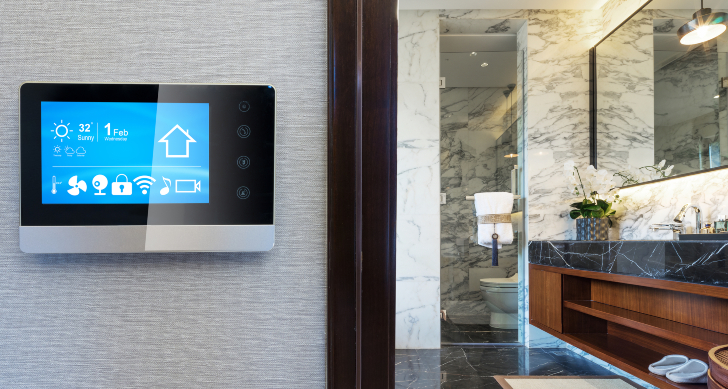

Умный дом 2023. Обзор перспектив развития системы «Умный дом».
Рынок услуг для «умного» дома по данным Bloomberg к 2028 году составит 11,7 млрд долл. (663 млрд руб.) с ежегодным ростом в 11,2%. Вместе с ростом спроса на когнитивные системы в умных домах, растет спрос на внедрение и обслуживание устройств «умного» дома.
Самый высокий среднегодовой темп роста ожидается в Азиатско-Тихоокеанском регионе и составит 12,1% роста ежегодно.
Увеличится спрос на услуги Интернета вещей для оборудования безопасности, наблюдения и технического обслуживания. Среднегодовой темп роста на услуги Интернета вещей составит 10,8% ежегодно в период с 2022 по 2028г. Основным препятствие роста рынка услуг согласно отчету Bloomberg высокая стоимость услуг по ремонту и обслуживанию устройств «умного» дома. Для увеличения доли рынка, ключевые игроки внедряют схемы партнерских отношений с целью расширения спектра предоставляемых услуг. В 2021 году сегмент услуг Интернета вещей для интеллектуальных устройств обеспечил более 60 % выручки на мировом рынке. Наибольшая доля мирового рынка в 2021 году приходилась на Северную Америку. Согласно данным Bloomberg около 81% пользователей в США имеют подключенные «умные» дома. Для сравнения, по прогнозам Statista выручка на рынке «умного» дома в США составит 33,6 млн долл., в России – 1,7 млн долл.
Согласно данным Statista к 2025 году количество «умных» домов в мире составит более 400 млн. А количество домохозяйств с «умными» камерами видеонаблюдения к 2027 году превысит 1 трлн. Индия, Китай, Южная Корея и Южная Африка входят в число стран с самым высоким уровнем проникновения основных интеллектуальных устройств в мире. В России доля владельцев крупных «умных» устройств составляет 13% и малых – 14%. В Индии эти показатели составляют 31% и 21% соответственно и самые низкие показатели в Великобритании – 8 и 7%.

Перспективы рынка
Спрос на гибкие решения, которые бизнес может легко интегрировать в свою линейку услуг и продуктов, будет расти и в дальнейшем. Отчасти это связано с тем, что многие вендоры и разработчики софта стремятся замкнуть пользователя в своей экосистеме, которая не работает с девайсами или софтом других поставщиков.
Замкнуть пользователя в своей экосистеме выгодно продавцу, особенно если продавать это не как товар, а как услугу по подписке. На рынке США набирают большую популярность устройства в области домашней безопасности и различные камеры, «умный» дверной глазок, и тому подобное. Безопасность продается довольно легко. За этим последуют товары и услуги, направленные в большей степени на удобство и качество жизни.
На рынок «умного» дома выходит все больше бытовых устройств с удаленным управлением, которые можно интегрировать в единую систему управления жильем. При этом данное направление развивается достаточно плохо, поскольку софт у многих подобных устройств разный, а цены на них выше. На рынке можно наблюдать устойчивый спрос на коробочные решения. Их преимущество в едином софте, работе устройств и ПО без ошибок. К сожалению, такие решения пока слишком дороги, но в перспективе именно они будут преобладать на рынке.
Важно понимать, что в основном рынок «умных» домов будет расти за счет строительства и ввода в эксплуатацию нового жилья с подготовленной для этого инфраструктурой, а люди станут готовы вкладывать средства в современные сервисы. Сейчас есть три основных сегмента — «умный» город, «умный» двор и «умный» дом.